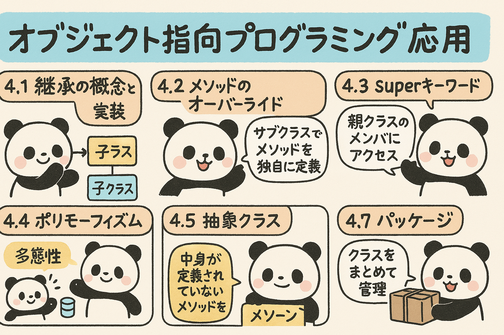

この章では、Javaのオブジェクト指向プログラミングの応用概念について学習していきます。継承やポリモーフィズムなどの概念を理解し、より複雑で拡張性の高いソフトウェアを設計できるようになりましょう。
オブジェクト指向プログラミングの基本概念を理解したところで、より高度なOOPの概念を学んでいきましょう。これらの概念を理解することで、柔軟で再利用可能なコードを書くことができるようになります。
継承は、既存のクラス（親クラスまたはスーパークラス）の特性や機能を新しいクラス（子クラスまたはサブクラス）に引き継ぐことができるオブジェクト指向プログラミングの重要な概念です。
継承を使用することで、次のようなメリットがあります：
図4.1: 継承の概念図 - 動物クラスを継承した犬クラスと猫クラス
Javaでは、extends キーワードを使用してクラスの継承を実装します。
// 親クラス（スーパークラス）
public class Animal {
private String name;
public Animal(String name) {
this.name = name;
}
public String getName() {
return name;
}
public void makeSound() {
System.out.println("動物が鳴いています");
}
}
// 子クラス（サブクラス）
public class Dog extends Animal {
private String breed;
public Dog(String name, String breed) {
super(name); // 親クラスのコンストラクタを呼び出す
this.breed = breed;
}
public String getBreed() {
return breed;
}
@Override
public void makeSound() {
System.out.println("ワンワン！");
}
public void walk() {
System.out.println(getName() + "が散歩しています");
}
}
以下の要件を満たす継承関係のクラスを実装してください：
メソッドのオーバーライドとは、親クラスで定義されたメソッドを子クラスで再定義することです。これにより、子クラスは親クラスのメソッドを独自の実装で置き換えることができます。
public class Vehicle {
public void start() {
System.out.println("車両のエンジンを始動します");
}
public void stop() {
System.out.println("車両を停止します");
}
}
public class Car extends Vehicle {
@Override
public void start() {
System.out.println("キーを回してエンジンを始動します");
}
// stopメソッドはオーバーライドされていないため、親クラスの実装が使用される
}
public class ElectricCar extends Vehicle {
@Override
public void start() {
System.out.println("静かに電気モーターを始動します");
}
@Override
public void stop() {
System.out.println("電気モーターを停止して回生ブレーキを作動させます");
}
}
オーバーライドは継承関係にあるクラス間で同じシグネチャのメソッドを再定義することですが、オーバーロードは同じクラス内で同じ名前でも異なるパラメータリストを持つメソッドを定義することです。
例（オーバーロード）:
public void display(int num) { ... }
public void display(String text) { ... }
public void display(int num, String text) { ... }
以下のクラス設計に基づいて、適切なオーバーライドを行ってください：
superキーワードは、子クラスから親クラスのメンバ（フィールドやメソッド）にアクセスするために使用されます。これは特に親クラスのメソッドをオーバーライドした場合や、親クラスのコンストラクタを呼び出す場合に重要です。
public class Person {
private String name;
private int age;
public Person(String name, int age) {
this.name = name;
this.age = age;
}
// ゲッターとセッター
}
public class Student extends Person {
private String studentId;
private String major;
public Student(String name, int age, String studentId, String major) {
super(name, age); // 親クラスのコンストラクタを呼び出す
this.studentId = studentId;
this.major = major;
}
// ゲッターとセッター
}
オーバーライドしたメソッド内で親クラスの同名メソッドを呼び出す場合にもsuperキーワードを使用します。
public class Animal {
public void eat() {
System.out.println("動物が食事をしています");
}
}
public class Cat extends Animal {
@Override
public void eat() {
super.eat(); // 親クラスのeatメソッドを呼び出す
System.out.println("猫はおいしそうに魚を食べています");
}
}
以下の要件を満たすクラス設計を実装してください：
ポリモーフィズム（多態性）とは、同じインターフェースを使って異なる型のオブジェクトを操作できる能力を指します。Javaでは主に継承とインターフェースを通じてポリモーフィズムを実現します。
図4.2: ポリモーフィズムの概念図 - 異なる形状クラスが同じインターフェースを実装
// 親クラス
public class Shape {
public void draw() {
System.out.println("形を描画します");
}
}
// 子クラス1
public class Circle extends Shape {
@Override
public void draw() {
System.out.println("円を描画します");
}
}
// 子クラス2
public class Rectangle extends Shape {
@Override
public void draw() {
System.out.println("長方形を描画します");
}
}
// ポリモーフィズムの使用例
public class DrawingApp {
public static void main(String[] args) {
// 親クラスの型で子クラスのオブジェクトを参照
Shape shape1 = new Circle();
Shape shape2 = new Rectangle();
// 同じメソッド呼び出しでも、実際のオブジェクトの型に応じた挙動を示す
shape1.draw(); // 円を描画します
shape2.draw(); // 長方形を描画します
// ポリモーフィズムを活用した配列
Shape[] shapes = new Shape[3];
shapes[0] = new Circle();
shapes[1] = new Rectangle();
shapes[2] = new Circle();
// すべての形状を描画
for (Shape shape : shapes) {
shape.draw(); // 各オブジェクトのdrawメソッドが呼ばれる
}
}
}
ポリモーフィズムを使用する際、時には親クラス型の参照変数から子クラス特有のメソッドやフィールドにアクセスするために型キャストが必要になることがあります。
Shape shape = new Circle();
shape.draw(); // Circleのdrawメソッドが呼ばれる
// 子クラス特有のメソッドを呼び出す場合は型キャストが必要
// Circle circleObj = shape; // コンパイルエラー
Circle circleObj = (Circle) shape; // ダウンキャスト
circleObj.drawRadius(); // Circleクラス特有のメソッド
// 安全なキャスト
if (shape instanceof Circle) {
Circle c = (Circle) shape;
c.drawRadius();
}
以下の要件を満たすアプリケーションを実装してください：
抽象クラスは、直接インスタンス化できないクラスで、抽象メソッド（実装のないメソッド）を持つことができます。抽象クラスは主に共通の振る舞いを定義し、子クラスに特定の実装を強制するために使用されます。
// 抽象クラス
public abstract class Database {
// フィールド
protected String connectionString;
protected boolean isConnected;
// コンストラクタ
public Database(String connectionString) {
this.connectionString = connectionString;
this.isConnected = false;
}
// 抽象メソッド（実装なし）
public abstract void connect();
public abstract void disconnect();
public abstract ResultSet executeQuery(String query);
// 具象メソッド（実装あり）
public boolean isConnected() {
return isConnected;
}
public void printConnectionInfo() {
System.out.println("接続文字列: " + connectionString);
System.out.println("接続状態: " + (isConnected ? "接続済み" : "未接続"));
}
}
// 抽象クラスを継承した具象クラス
public class MySQLDatabase extends Database {
public MySQLDatabase(String connectionString) {
super(connectionString);
}
@Override
public void connect() {
// MySQLデータベースへの接続実装
System.out.println("MySQLデータベースに接続しています...");
// 接続処理
isConnected = true;
}
@Override
public void disconnect() {
// MySQLデータベースからの切断実装
System.out.println("MySQLデータベースとの接続を切断しています...");
// 切断処理
isConnected = false;
}
@Override
public ResultSet executeQuery(String query) {
// MySQLでクエリを実行する実装
System.out.println("MySQLデータベースでクエリを実行: " + query);
// クエリ実行処理
return null; // 実際はResultSetを返す
}
}
以下の要件を満たす抽象クラスとその実装クラスを作成してください：
インターフェースは、クラスが実装すべきメソッドを定義する「契約」のようなものです。Javaのインターフェースは、完全な抽象化を提供し、多重継承の一形態を可能にします。
図4.3: インターフェースと多重実装の概念図
// インターフェース
public interface Playable {
// 抽象メソッド（暗黙的にpublic abstract）
void play();
void stop();
// 定数（暗黙的にpublic static final）
int MAX_VOLUME = 100;
// デフォルトメソッド（Java 8以降）
default void pause() {
System.out.println("再生を一時停止します");
}
// 静的メソッド（Java 8以降）
static void printInfo() {
System.out.println("これは再生可能なメディアのインターフェースです");
}
}
// 別のインターフェース
public interface Recordable {
void record();
void stopRecording();
}
// インターフェースを実装するクラス
public class MusicPlayer implements Playable {
private boolean isPlaying;
@Override
public void play() {
isPlaying = true;
System.out.println("音楽を再生しています");
}
@Override
public void stop() {
isPlaying = false;
System.out.println("音楽の再生を停止しました");
}
// デフォルトメソッドのオーバーライド（オプション）
@Override
public void pause() {
System.out.println("音楽の再生を一時停止しました");
}
}
// 複数のインターフェースを実装するクラス
public class VideoPlayer implements Playable, Recordable {
private boolean isPlaying;
private boolean isRecording;
@Override
public void play() {
isPlaying = true;
System.out.println("動画を再生しています");
}
@Override
public void stop() {
isPlaying = false;
System.out.println("動画の再生を停止しました");
}
@Override
public void record() {
isRecording = true;
System.out.println("録画を開始しました");
}
@Override
public void stopRecording() {
isRecording = false;
System.out.println("録画を停止しました");
}
}
| 特性 | インターフェース | 抽象クラス |
|---|---|---|
| 継承 | 複数のインターフェースを実装可能 | 単一継承のみ |
| メソッド | 抽象メソッド、デフォルトメソッド、静的メソッド | 抽象メソッドと具象メソッド |
| フィールド | 定数のみ（public static final） | すべての種類のフィールド |
| コンストラクタ | 持てない | 持てる |
| アクセス修飾子 | すべてpublic（暗黙的） | 任意のアクセス修飾子 |
| 使用目的 | 「何ができるか」を定義（機能） | 「何であるか」を定義（本質） |
Java 8でインターフェースにデフォルトメソッドと静的メソッドが追加され、Java 9ではプライベートメソッドも追加されました。
// Java 9以降のインターフェース
public interface ModernInterface {
// 抽象メソッド
void abstractMethod();
// デフォルトメソッド（Java 8以降）
default void defaultMethod() {
// 共通の実装
privateMethod(); // プライベートメソッドを呼び出し
System.out.println("デフォルトの実装");
}
// 静的メソッド（Java 8以降）
static void staticMethod() {
System.out.println("静的メソッド");
}
// プライベートメソッド（Java 9以降）
private void privateMethod() {
System.out.println("プライベートヘルパーメソッド");
}
}
以下の要件を満たすインターフェースとクラスを実装してください：
パッケージは、関連するクラスやインターフェースをグループ化するためのメカニズムです。パッケージはコードの整理と名前空間の管理に役立ち、クラス間の潜在的な名前の衝突を防ぎます。
// パッケージの宣言（ファイルの最初に記述）
package com.example.banking;
// クラスの定義
public class Account {
// クラスの内容
}
// 別のファイル
package com.example.banking;
// 同じパッケージのクラスはインポートなしで使用可能
public class Transaction {
private Account account;
public Transaction(Account account) {
this.account = account;
}
}
// さらに別のファイル
package com.example.reporting;
// 異なるパッケージのクラスを使用するにはインポートが必要
import com.example.banking.Account;
public class AccountReport {
private Account account;
public AccountReport(Account account) {
this.account = account;
}
}
パッケージ名には通常、ドメイン名を逆にした形式を使用します。これにより、世界中で一意のパッケージ名を作成できます。
図4.4: パッケージ構造の例 - オンライン書店システム
他のパッケージのクラスを使用するには、importステートメントを使用します。
Javaには、よく使われる機能を提供する多くの標準パッケージがあります：
Javaのアクセス修飾子はパッケージレベルの可視性にも影響します。
| 修飾子 | 同じクラス | 同じパッケージ | サブクラス | 他のパッケージ |
|---|---|---|---|---|
| private | ○ | × | × | × |
| （なし/デフォルト） | ○ | ○ | ×（別パッケージの場合） | × |
| protected | ○ | ○ | ○ | × |
| public | ○ | ○ | ○ | ○ |
以下の要件を満たす小規模な銀行アプリケーションを設計してください：
以下の問題に答えて、第4章の内容の理解度を確認しましょう。
問題1: Javaにおける継承に関する記述で正しいものはどれですか？
問題2: メソッドのオーバーライドについて正しい説明はどれですか？
問題3: superキーワードの正しい使用法はどれですか？
問題4: 次のコードの出力として正しいのはどれですか？
public class Animal {
public void makeSound() {
System.out.println("動物が鳴いています");
}
}
public class Dog extends Animal {
@Override
public void makeSound() {
System.out.println("ワンワン");
}
}
public class Test {
public static void main(String[] args) {
Animal animal = new Dog();
animal.makeSound();
}
}
問題5: 抽象クラスに関する説明で正しいものはどれですか？
問題6: インターフェースについて正しい説明はどれですか？
問題7: パッケージに関する説明で正しいものはどれですか？
問題8: 次のコードの実行結果は何ですか？
interface A {
default void show() {
System.out.println("A");
}
}
interface B {
default void show() {
System.out.println("B");
}
}
class C implements A, B {
public void show() {
B.super.show();
}
public static void main(String[] args) {
new C().show();
}
}